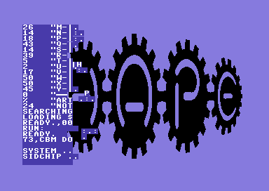
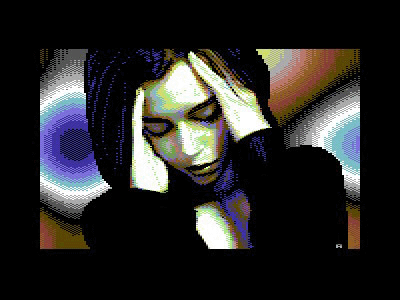

09/1/10: Shape - Artillery

While the graphical effects of this demo are absolutely mind blowing, the real attraction
that makes this demo so phenomenal is the SID tune. Composed by
Geir Tjelta of the group
Maniacs of Noise, this tune really goes above and beyond in demonstrating the power
and capabilities of the MOS 6581 sound chip.
04/15/06: Error 23 - Resource & The Dreams

This demo is special because not only is it among the first productions I had
ever seen on the Commodore 64 platform, I was introduced to it (and Commodore demos
in general) via a YouTube video
that walks through the demo almost effect by effect and explains in detail the various
techniques used to achieve the effect.